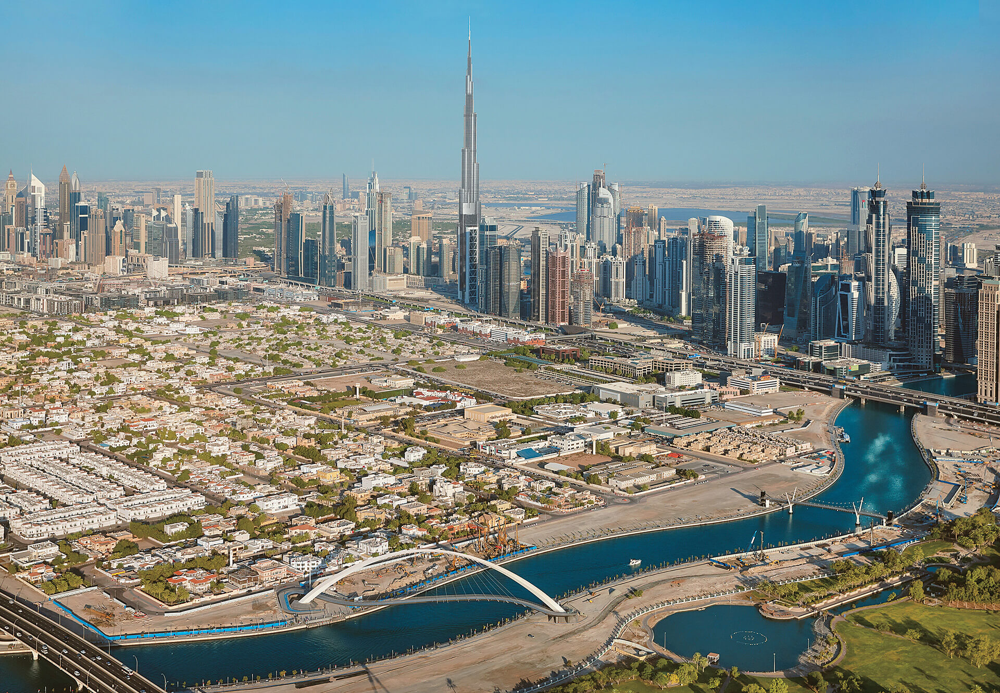
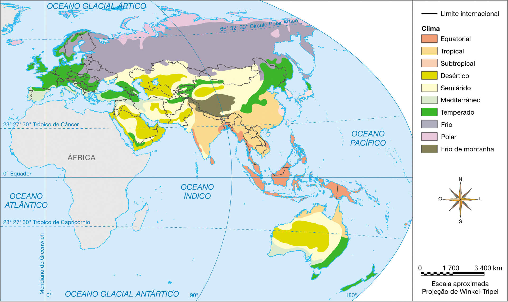
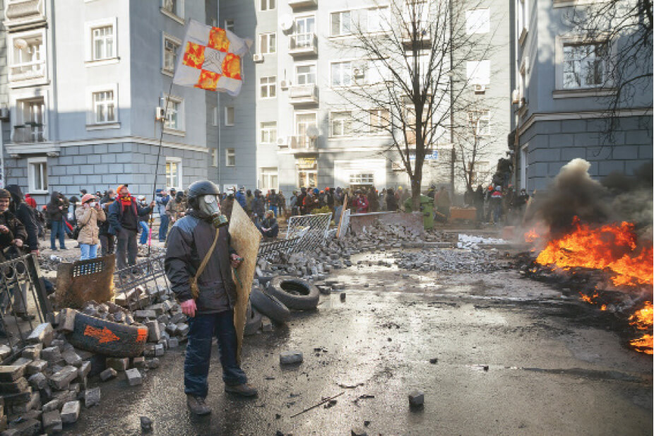
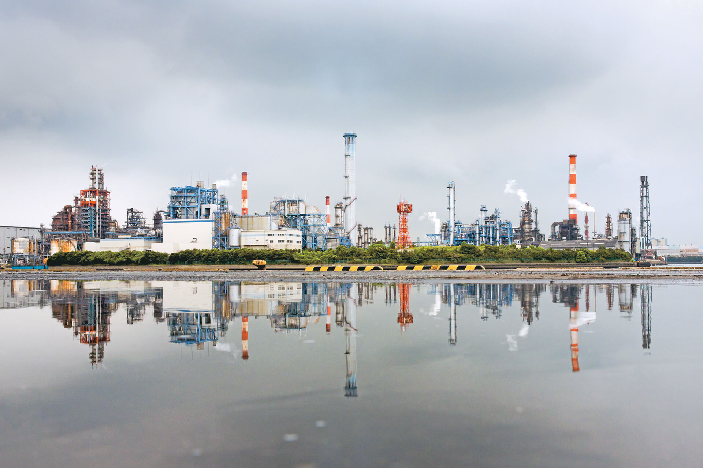

A paisagem representada na foto é muito apreciada pelos turistas. Trata-se da praia de Pitinga, no litoral sul da Bahia. Apresenta características, feições e elementos marcantes.
Embora ela nos pareça estática, está em constante transformação.
Por quais transformações essa paisagem passou? Que elementos podem ter interferido nessas alterações?
Objetivos
Compreender a ação do tectonismo na superfície terrestre.
Conhecer a dinâmica que envolve os terremotos e o vulcanismo na Terra.
Entender a relação entre as forças geológicas e alguns eventos catastróficos.
Identificar os processos relacionados a sismos e a vulcanismos.
Conhecer os diferentes tipos de intemperismo e seu papel na transformação das rochas e na formação do solo.
Compreender a ação do processo erosivo na formação do relevo e do solo.
Como você pôde conferir no capítulo anterior, as formas de relevo, ou as feições existentes na superfície terrestre, são bastante variadas. Muito diversificados também são os agentes que atuam para formá-las.
Há, basicamente, dois tipos de agentes do relevo: os internos, aqueles que atuam a partir das forças do interior do planeta, e os externos, que atuam na parte exterior da crosta. Assim, as diferentes formas do relevo terrestre resultam
de uma relação entre os agentes internos, os quais tendem a constituir novas áreas emersas, e os agentes externos, que desgastam a litosfera rebaixando as altitudes e transportando o material para as porções mais baixas.
Agentes internos
O interior da Terra ainda guarda energia (calor) gerada durante o processo de formação que ocorreu há 4,5 bilhões de anos. Essa energia pode ser comparada a um grande “motor” que movimenta as Placas Tectônicas que compõem a litosfera,
originando novas terras emersas, como as cadeias de montanhas e as ilhas.
Constituem os principais agentes internos: os vulcões, os terremotos e o tectonismo (dobras e falhas produzidas pelos movimentos tectônicos). Muitas vezes, atuam no sentido de erguer partes da crosta, formando novas feições.
Tectonismo
Em geral, o tectonismo se caracteriza por processos bastante lentos que se prolongam por milhões de anos e originam importantes cadeias montanhosas. Ocorre por ação de forças de compressão entre as Placas Tectônicas com limites
convergentes. O acúmulo de tais forças ao longo das eras e dos períodos geológicos ocasiona o enrugamento da litosfera, o qual se manifesta na superfície em forma de grandes montanhas e cordilheiras, marcando os relevos das paisagens.
Observe a imagem a seguir.
Divo. 2012. 3D.
De modo simplificado, é a partir do encontro entre Placas Tectônicas que se dá o processo de constituição das grandes cadeias de montanhas, como a dos Andes, na América do Sul; das Montanhas Rochosas, na América do Norte; dos Alpes, na
Europa; da Cadeia do Atlas, na África; ou do Himalaia, na Ásia, este último é formado pelo encontro de duas placas continentais. Observe, no mapa a seguir, a localização dessas e de outras importantes cadeias montanhosas do globo.
Planisfério: principais dobramentos
Talita Kathy Bora
Fonte: CHRISTOPHERSON, Robert W. Geossistemas: uma introdução à Geografia Física. Porto Alegre: Bookman, 2012. p. 377. Adaptação.
Cartografar
Compare o mapa acima com o mapa das Placas Tectônicas. O que é possível perceber?
Planisfério: Placas Tectônicas
Talita Kathy Bora
Fonte: TEIXEIRA, Wilson et al. (Org.). Decifrando a Terra. São Paulo: Companhia Editora Nacional, 2009. p. 86. Adaptação.
Como você pode perceber, as cadeias de montanhas são denominadas, em geral, de dobramentos e classificam-se de acordo com sua idade relativa. As que foram originadas durante o período geológico Terciário (entre cerca de 2 e 65 milhões
de anos atrás) denominam-se dobramentos modernos. Mesmo que sua formação demore milhares ou milhões de anos, são jovens do ponto de vista geológico. Já as cadeias originadas em eras geológicas anteriores são denominadas dobramentos
antigos.
O processo de formação de dobramentos é conhecido como orogenia, termo que deriva do grego. Assim, oro vem da palavra oros e significa “montanha”, e genia, de genese, “formação ou origem”. A orogenia costuma ser o resultado de dois
processos similares, mas distintos: o de dobramentos, que é o encurvamento da superfície; e o de falhamentos, que são fraturas ou rupturas. Observe as imagens.
Divo. 2012. Digital.
As rochas comprimidas sob a pressão do encontro entre Placas Tectônicas podem tanto dobrar, formando dobramentos, quanto sofrer fraturas e se romper, deslocando-se e formando falhamentos.
Na Cordilheira do Himalaia, formada pelo encontro de duas placas continentais, a Placa Indiana e a Placa Asiática, ficam as maiores altitudes do planeta. É o caso do Monte Everest, o mais alto do mundo, com 8 848 metros, localizado na
fronteira entre os territórios da China (região do Tibete) e do Nepal.
Como se formou o Himalaia
Divo. 2012. Digital.
Fonte: GRANDE atlas mundial. Rio de Janeiro: Reader’s Digest, 2007. p. 133-134.
O esquema representa o processo de formação da Cordilheira do Himalaia. Observe que a Placa Continental Indo-Australiana se deslocou em direção à Placa Continental Eurasiana. A pressão entre as duas placas provocou o
enrugamento da crosta, causando a elevação do Himalaia, ainda hoje em andamento.
Terremotos
Os movimentos das Placas Tectônicas, responsáveis pela renovação da litosfera e pela formação de dobramentos modernos, também podem causar perigosos abalos sísmicos capazes de gerar destruição. Os terremotos, como são comumente
chamados esses abalos, representam uma das forças mais devastadoras da natureza.
Como vimos, as Placas Tectônicas apresentam zonas de contato, bem como falhas, que são como rachaduras nas rochas. À medida que vão se movimentando, essas zonas exercem força umas sobre as outras. Em alguns casos, tal força faz com
que tensões se concentrem nas camadas de rochas que formam a litosfera.
Divo. 2012. Digital.
É possível a tensão se acumular por décadas ou até séculos, dobrando lentamente enormes blocos de rocha que podem se quebrar ou se acomodar de maneira violenta, ao ocasionar ou aumentar uma falha. As acomodações e rupturas em geral
se dão em grandes profundidades no ponto denominado hipocentro, a partir do qual se libera a tensão acumulada. Quando isso ocorre, ondas de choque ou ondas sísmicas se propagam pela litosfera e, assim que atingem a superfície, no
ponto denominado epicentro, geram os tremores que conhecemos como terremotos, os quais podem causar danos e destruição. Observe a ilustração para entender melhor.
Saiba +
Medindo os terremotos
A primeira classificação de terremotos surgiu no século XIX, sendo utilizada em determinadas situações ainda hoje com algumas adaptações. O critério de medição usado são os danos materiais que o terremoto causa, ou seja, trata-se
de uma escala de intensidade, ou escala de Mercalli.
Contudo, pensando em uma maneira mais objetiva de medir terremotos, Charles Richter propôs, em 1935, um método que calculava a magnitude do abalo com base na amplitude das ondas registradas em um aparelho chamado sismógrafo. Esse
método, denominado escala de magnitude Richter, também conhecido como magnitude Richter ou escala Richter, não tem limite máximo, porém, até os dias de hoje, são muito raros tremores que tenham chegado à magnitude de valor 9. Cada
valor da magnitude representa ondas 10 vezes mais amplas e uma quantidade de energia cerca de 30 vezes maior que a do valor anterior.
Terremotos com menos de 4 graus na escala Richter são muito comuns, ocorrendo em diferentes pontos do planeta todos os dias. Dificilmente são sentidos pela população.
Já os de mais de 4 graus podem causar mortes, além de danos significativos, sendo os acima de 7 graus muito destrutivos. Quando acontecem próximo a zonas habitadas, geralmente vitimam muitas pessoas.
Quando acontecem nas regiões oceânicas, os terremotos podem provocar grandes ondas que são chamadas de maremotos ou tsunamis (palavra que vem do japonês). Em casos extremos, essas ondas podem alcançar grandes dimensões e
causar danos às regiões costeiras. Foi o que ocorreu com o tsunami que atingiu diversos países do Oceano Índico em 2004, em particular a Indonésia, a maior afetada, com mais de 35 mil mortes. Somando-se os 12 países atingidos
pela tragédia, o total de mortos ultrapassou os 200 mil.
Os tsunamis se formam quando um tremor no assoalho oceânico ocasiona um deslocamento vertical da água para cima. Inicialmente, trata-se de uma onda de poucos centímetros sobre grandes profundidades. À medida que atinge águas
mais rasas e perde velocidade, o deslocamento pode alcançar vários metros de altura.

Angela Giseli. 2010. Digital.
#geografia
Há grande quantidade de material de boa qualidade sobre a temática tsunami disponível na internet atualmente. Dessa forma, faça uma pesquisa e responda às seguintes questões.
O que são os tsunamis e como ocorrem?
Cite alguns casos de tsunamis históricos.
Escreva algumas medidas que podem reduzir seu impacto.
Vulcões
Vulcanismo é o processo pelo qual o material magmático presente no manto terrestre chega até a superfície, passando, então, a ser denominado lava. Já os vulcões são aberturas na superfície da terra por onde o magma é expelido.
Em geral, um vulcão se forma quando uma elevação ou uma montanha é erguida pelo acúmulo de lavas. Esse formato é bastante comum, mas não é o único possível. Suas características podem ser muito variadas, conforme você pode verificar a
seguir.
Em relação à aparência, podem se apresentar como cones íngremes ou como elevações mais suaves na superfície, por vezes com um lago ou caldeira, entre outros;
sobre o tipo de material que expelem, pode ser sólido, líquido e/ou gasoso (como magma ou lava mais fluido ou viscoso, além de gases e cinzas, por exemplo);
quanto ao tipo de erupção, há aquelas que se dão em grandes explosões, além de erupções mais discretas que apenas derramam “rios” de lava pela superfície. Esses fluxos podem se dar no topo, nas paredes do vulcão ou em ambos.
Tipos comuns de aparência de um vulcão

Divo. 2017. Digital.
Divo. 2017. Digital.

Divo. 2017. Digital.
Divo. 2017. Digital.
Fonte: PRESS, Frank et al. Para entender a Terra. 4. ed. Porto Alegre: Bookman, 2006, p. 149.
Os aspectos mencionados se referem a vulcões situados sobre as superfícies continentais. No entanto, a maior parte dos fluxos de magma que atinge a superfície terrestre vem do fundo dos oceanos. Normalmente, são grandes fissuras,
fendas submarinas preenchidas por material magmático, nos locais onde os limites entre placas são divergentes. Felizmente, esse tipo de erupção não causa danos nem traz riscos à sociedade.
Contudo, pelo fato de os solos associados aos vulcões serem férteis, há comunidades de pessoas que se desenvolveram próximo a eles. Desse modo, os vulcões que estão em áreas continentais são os mais perigosos aos seres humanos. Tanto
que, atualmente, muitos dos que se encontram ativos e ficam perto de áreas habitadas são monitorados com aparelhos especiais, a fim de tentar antecipar possíveis erupções violentas a tempo de salvar a vida das pessoas.
Mesmo quando a erupção de um vulcão não é violenta e acontece distante de áreas habitadas, é possível haver problemas para as atividades humanas, principalmente em razão das cinzas lançadas no ar, as quais podem se deslocar por
milhares de quilômetros e atrapalhar o tráfego aéreo, por exemplo.
Operação de resgate no Vulcão Ontake, Japão, cuja erupção em 2014 causou a morte de mais de 40 pessoas
Latinstock/REUTERS/Kyodo
Conexões
Onde pode haver vulcões e terremotos?
Assim como os terremotos e a formação de grandes cordilheiras (pelo processo de dobramento), a dinâmica que envolve os vulcões apresenta relação com os movimentos tectônicos e com a energia vinda do interior do planeta, mais
especificamente as bordas das Placas Tectônicas ou o encontro de seus limites.
Embora se espalhem pelo mundo, a maior parte dos terremotos e das erupções vulcânicas acontece nas margens do Oceano Pacífico, em uma faixa onde há intensa atividade sísmica e vulcânica. Por essa característica, tal faixa é conhecida
como Anel de Fogo do Pacífico ou Círculo de Fogo do Pacífico.
O funcionamento do planeta e dos agentes internos pode ser mais bem entendido se verificarmos como são constituídos os vulcões. A seguir, algumas de suas principais características.
A maioria deles se forma nos limites convergentes entre Placas Tectônicas, onde ocorre o processo de subducção, isto é, uma placa mergulha no manto sob outra placa, fundindo-se e subindo novamente à superfície em forma de magma ou
lava;
outra parte considerável se constitui nos limites divergentes submarinos, em meio às fissuras que expelem magma constantemente, formando grandes cordilheiras submarinas, denominadas dorsais mesoceânicas;
uma pequena parte ocorre não necessariamente nos limites, mas no interior das placas, nas denominadas zonas de ponto quente (hot spots) e se situa sobre plumas de magma mais quente no manto terrestre.
A seguir, observe a ilustração sobre vulcanismo e tectônica de placas.
Vulcanismo e tectônica de placas

Divo. 2017. Digital.
Fonte: PRESS, Frank et al. Para entender a Terra. 4. ed. Porto Alegre: Bookman, 2006. p. 159.
Enquanto muitos vulcões se formam nos encontros entre as placas, nas zonas de subducção, outros se encontram nas zonas de divergência, em meio às fissuras submarinas. Além desses, há os vulcões que se localizam sobre pontos
quentes, que se dão sob a crosta, no manto terrestre. Muitas vezes, o acúmulo de lavas sobre esses pontos gera ilhas que, com o deslocamento da placa sobre o ponto quente, se afastam destes, dando lugar a outra ilha que se forma
em seguida da mesma maneira, e assim sucessivamente. Nesses casos, temos a formação de arquipélagos em arco, como o do Havaí (EUA), no Oceano Pacífico.
Olhar geográfico
Leia esta matéria sobre como o Brasil se insere no contexto das ocorrências de terremotos e erupções vulcânicas:
O Brasil não costuma sofrer com terremotos intensos ou erupções vulcânicas. Essa situação confortável é resultado de sua localização privilegiada, pelo menos se consideramos apenas as catástrofes geológicas.
Nosso país está situado no interior da Placa Sul-Americana. Estamos, portanto, distantes do limite em que a Placa de Nazca encontra a Sul-Americana, no Pacífico. Aqui, apenas sentimos alguns reflexos, bem fracos, da entrada de
Nazca por baixo da América do Sul. Esses reflexos são falhas e dobramentos suaves na Bacia Amazônica.
No território brasileiro também são registrados tremores de terra de baixa intensidade. Em geral, eles são reflexos distantes de terremotos que ocorrem na Cordilheira dos Andes ou são causados pela compressão e pelos movimentos da
própria Placa Sul-Americana.
No passado, no entanto, a coisa foi diferente: muito movimento do magma foi gerado pouco antes de nosso continente se separar da África e de se formar o Oceano Atlântico Sul. Nesse período houve intenso vulcanismo por aqui, que
afetou todas as regiões do território nacional. Como sabemos isso? Ora, ainda é possível observar os sinais espalhados por nosso país, como os solos muito férteis, conhecidos como “terra roxa”. Eles são resultado de grandes derrames
de lavas que ocorreram entre o Jurássico e o Cretáceo na bacia sedimentar do Paraná e cobriram uma área de cerca de 1 200 000 km2.
Derrames semelhantes, de mesma idade, também ocorreram na Namíbia, no sudoeste da África, o que mostra que, nessa época (por volta de 130 milhões de anos atrás), o oceano ainda não havia se formado e separado os continentes.
Outros sinais da atividade vulcânica podem ser percebidos nas rochas mais antigas da crosta brasileira – os diques. Eles são muito comuns em nosso território, possuem formato tabular (como uma tábua de madeira) e foram formados
pelo magma que se solidificou.
No fim do Terciário, o vulcanismo cessou na área continental e, mais recentemente, no Quaternário, também deixou de acontecer na área oceânica. Um dos últimos episódios desse período foi a formação da ilha de Trindade, no oceano, a
leste do Espírito Santo. [...]
Imagem de satélite da Ilha de Trindade, no Espírito Santo, 2012
ALMEIDA, Fernando F. M. de. E o Brasil nessa história? Ciência Hoje na Escola, Rio de Janeiro, n. 10, p. 22, 2006.
Com base no texto, responda às questões.
Que informações sobre o Brasil o texto apresenta?
Qual a explicação geológica para o fato de no Brasil não haver terremotos intensos ou erupções vulcânicas?
Que evidências associadas a um passado geológico explicam a ligação do Brasil com o continente africano?
Qual foi o resultado de um dos últimos episódios de vulcanismo registrados em território brasileiro?
Agentes externos
Podemos, durante toda a vida, observar uma montanha erguida por força dos agentes internos do relevo, e ela sempre estará lá. Porém, pela atuação dos agentes externos do relevo, após milhões de anos, a mesma montanha poderá ter se
desgastado totalmente e não mais existir, dando lugar, por exemplo, a um lago ou a uma planície.
Os principais agentes externos são a água (rios, mares e chuva), o vento e as geleiras, além dos vegetais e animais – incluindo-se as atividades humanas. Esses agentes desgastam as superfícies por meio de dois processos, o intemperismo
e a erosão, os quais atuam no sentido de transformar as rochas e transportar seus sedimentos, destruindo as formas existentes e nivelando os terrenos.
A intensidade dos processos desencadeados pelos agentes externos está ligada às características climáticas e, principalmente, à quantidade de água presente no ambiente. Quanto maior a quantidade de água, maior sua atuação no sentido de
desagregar os minerais que constituem as diferentes rochas existentes na litosfera. Assim, estas se fragmentam em porções cada vez menores e seus fragmentos são transportados para as regiões mais baixas do relevo.
Saiba +
O solo e os agentes externos do relevo
Nos primeiros momentos de sua existência, a litosfera era formada apenas de rochas magmáticas. Com o tempo, as rochas magmáticas constituíram grandes planaltos que foram se desgastando, desintegrando-se e fragmentando-se, compondo
as primeiras porções de terra e areia do planeta. Bilhões de anos mais tarde, essas porções serviram de suporte à vida das bactérias e dos vegetais, dando origem aos primeiros tipos de solos.
Em sua maior parte, o solo é formado por minerais provenientes de rochas preexistentes, combinados com matéria orgânica, que vem dos seres vivos.
Os elementos inorgânicos que compõem o solo são gerados nos processos de erosão e intemperismo das rochas. Já os elementos orgânicos vêm da decomposição de vegetais e animais. Assim, o solo é constituído pela camada superficial de
terra e por restos orgânicos, sendo formado, basicamente, pela ação dos agentes externos sobre o relevo do planeta.
Kino.com.br/Werner Rudhart
Plantação de milho em Caarapó, MS, 2013
O solo também é um recurso natural muito importante para a população, pois dele provêm os alimentos.
Intemperismo
Intemperismo é o processo que promove alteração nas rochas, decompondo-as e desagregando-as. Existem, basicamente, dois tipos de intemperismo: o físico ou mecânico e o intemperismo químico. Vamos verificar separadamente cada um deles.
Intemperismo físico ou mecânico
O intemperismo físico é a fragmentação da rocha em blocos ou pedaços menores. É causado tanto por ação do impacto com outras rochas quanto durante o transporte de material pela água, principalmente em rios de planalto, nos quais esta
pode atingir grandes velocidades, o que dá a ela mais força para realizar tal ação. Os rios podem movimentar grandes blocos de rocha que vão se fragmentando em blocos menores em razão das colisões.
Frequentemente, essas rochas adquirem formato arredondado, sendo conhecidas como seixos rolados, muito utilizadas em jardins e aquários. Outra maneira comum de ocorrer o intemperismo físico é por meio da variação de temperatura em
grandes blocos rochosos, por exemplo. Nesses casos, durante o dia, os blocos são aquecidos pela ação do calor solar e dilatam-se. Com a chegada da noite e/ou da chuva, as temperaturas tendem a cair rapidamente. O processo diário de
resfriamento e a rápida contração fazem com que, ao longo do tempo, apareçam fraturas no bloco rochoso, o qual vai se fragmentando em blocos menores.
Rochas de formato esférico se fragmentam em camadas em decorrência da variação diária de temperatura.
O intemperismo químico é um processo de decomposição ou dissolução dos minerais que compõem a rocha por meio de uma série de reações químicas, geralmente sob a ação da água. Em regiões com climas mais quentes, por exemplo, a
intensidade do intemperismo químico é maior, em razão do aumento na velocidade das reações químicas. Outro caso comum é a ação da água do mar sobre as rochas litorâneas ou submarinas, uma vez que diversas reações químicas ocorrem
envolvendo as rochas e a água do mar e seus sais.
A ação da água interfere muito nas características dos solos e das rochas. A precipitação das chuvas pode retirar os nutrientes do material particulado do solo (denominado de processo de lixiviação), reduzindo sua fertilidade
natural. Em locais que apresentam estações chuvosas e secas bem definidas, ocorre também a laterização, que é resultado de reações químicas no solo e nas rochas e forma a laterita (rocha ferruginosa) e os solos lateríticos, cuja
concentração de ferro é responsável por colorações próximas ao alaranjado, vermelho e marrom.
Rochas em contato constante com a água do mar sofrem intemperismo químico.
Os intemperismos químico e físico se reforçam mutuamente, ou seja, um facilita a ocorrência do outro. Ambos os tipos podem, ainda, ser acelerados pela ação dos seres vivos, vegetais ou animais. Plantas podem nascer em pequenas fraturas
na rocha e, à medida que suas raízes crescem, vão se infiltrando e aumentando essas fraturas, o que possibilita a entrada da água e o incremento do intemperismo químico, por exemplo.
Alguns animais cavam o solo, o que possibilita que uma maior quantidade de água chegue até a camada de rocha impermeável e aumente o intemperismo químico sobre ela. Os excrementos (fezes e urina) dos animais também ocasionam
intemperismo.
A vegetação também promove o intemperismo e ajuda na formação do solo.
Relacione as imagens a seguir ao tipo de intemperismo que elas representam ou à sua causa. Em seguida, escreva, nas linhas abaixo de cada fotografia, quais características possibilitaram a identificação.
De maneira genérica, podemos definir a erosão como o conjunto de processos que desgastam e transportam o solo e a rocha, realizados por agentes, como a chuva, os rios, os ventos, os mares, as geleiras, entre outros. Há vários tipos de
erosão.
Erosão pluvial
Trata-se da erosão causada pela água das chuvas. Em áreas áridas ou semiáridas, onde esta é escassa, os processos de erosão pluvial são menos intensos. Já onde predomina o clima úmido, ocorre de forma mais expressiva, pois as chuvas
tendem a desgastar rapidamente as rochas, além de gerar intemperismo.
Para a agricultura, a erosão pluvial representa um grave problema, pois grande quantidade de solo é perdida anualmente carregada pelas águas das chuvas. Além disso, a chuva é uma das responsáveis pela formação de grandes buracos ou
sulcos no chão, denominados ravinas ou voçorocas, prejudicando os cultivos.
Saiba +
Ravinas são sulcos na superfície da terra produzidos pela ação erosiva da água da chuva, quando esta escoa de terrenos mais altos em direção a rios e a porções mais baixas.
Já voçorocas, também chamadas de boçorocas em certos locais, podem alcançar profundidades de várias dezenas de metros e extensão de centenas de metros. Trata-se, basicamente, de uma ravina de grandes dimensões.
Kino.com.br/Wagner Santos
Ravinas no município de Luziânia, GO, 2011
O tipo de solo, a remoção da cobertura vegetal, a atividade agropecuária e urbana praticada e a declividade da área são alguns fatores que estão associados à ocorrência de ravinas e voçorocas.
Pulsar Imagens/João Prudente
Voçoroca em área periférica do município de Casa Branca, SP, 2013
Existem algumas técnicas que ajudam a reduzir a erosão pluvial sobre as terras agricultáveis. Uma delas é a das curvas de nível. Consiste em plantar seguindo linhas de mesma altitude que retêm a água, impossibilitando que esta
transporte o solo para as áreas mais baixas.
Outra técnica é a do plantio direto, na qual a terra não precisa ser arada. Assim, a nova cultura é plantada sobre os restos da cultura anterior, que funciona como uma proteção, impedindo o impacto direto das gotas da chuva e reduzindo
o escoamento superficial.
O terraceamento também é uma importante prática de combate à erosão. É realizado por meio da construção de terraços que controlam o volume com que as águas das chuvas escoam.
Plantação de café em curvas de nível em área com desnível acentuado, município de Caconde, SP, 2009
Trata-se do tipo de erosão realizado pelas águas dos rios. Os rios são os caminhos naturais que as águas percorrem desde suas nascentes, nas porções mais elevadas do relevo, até a foz, localizada nas áreas mais baixas. Eles também
transportam sedimentos, pequenas partículas sólidas. Durante seu trajeto, o rio atua desgastando a superfície por onde passa em diferentes intensidades, dependendo da quantidade de água disponível e de sua velocidade.
A coloração dos rios depende do tipo e da quantidade de sedimentos que eles transportam. Na imagem, vemos o encontro entre os rios Negro, que carrega muita matéria orgânica, e Solimões, que transporta muita argila e sedimentos, o
que explica suas colorações distintas.
Grand Canyon: o desgaste feito pelo Rio Colorado pode ser observado nas profundas gargantas formadas nos paredões rochosos.
Exemplos de formas de relevo ocasionadas por erosão fluvial, os cânions são vales profundos que apresentam paredões abruptos. O mais famoso é o Grand Canyon, localizado no sudoeste dos Estados Unidos e formado pela ação do Rio
Colorado. Durante milhares de anos, o rio desgastou a superfície do seu leito e cavou “gargantas” com mais de mil metros de desnível em alguns pontos.
Erosão eólica
A erosão causada pelos ventos, ou erosão eólica, é o processo de desgaste das rochas por ação do movimento do ar atmosférico.
Nas porções inferiores, mais próximo ao solo, a rocha sofre abrasão, que é o desgaste causado pelo atrito das partículas de areia lançadas pelo vento. Ou seja, a erosão eólica é maior na base das estruturas e tende a diminuir à medida
que aumenta a altura, o que explica alguns dos formatos encontrados na natureza.
A erosão eólica é capaz de produzir formas bastante peculiares; muitas são atrações turísticas, como é o caso da Pedra Furada.
A faixa de contato entre as terras emersas, ou seja, entre os continentes e as ilhas, e os oceanos e mares circundantes é chamada de costa. As formas que a costa assume têm relação com as forças que essas grandes massas de água exercem
sobre ela. Assim, a ação do mar sobre as rochas costeiras é o que denominamos de erosão marinha.
As ondas também representam importantes agentes de erosão marinha nas áreas costeiras. Quando elas colidem com paredões rochosos, chamados de falésias, podem ocorrer a erosão da base e o desmoronamento das porções mais elevadas. Assim,
a água vai lentamente desgastando esses paredões e fazendo com que recuem na paisagem, enquanto o mar ganha terreno sobre as áreas emersas em algumas regiões do planeta.
Desgaste de uma falésia pela erosão marinha
Divo. 2012. Digital.
Fonte: THE GREAT Atlas. Nova Iorque: American Map Corporation, 1998.
A Ilha do Mel, famoso ponto turístico no município de Paranaguá, litoral do Paraná, é composta de duas partes que são conectadas por uma faixa de areia relativamente estreita. A ação das marés no decorrer das décadas causou forte
erosão, chegando a separar as duas partes temporariamente em 1994.
As geleiras ou os glaciares são grandes blocos de gelo formados nas porções mais elevadas do relevo. Costumam se deslocar lentamente para as porções mais baixas, muitas vezes em direção ao encontro com o mar, onde ocorre o degelo. No
processo de deslocamento, em sua expansão ou, em períodos de aquecimento, em sua retração, costumam causar grande desgaste na superfície. Como consequência, muitos vales adquirem formato mais largo na base, na forma de U. Quando entram
em contato com o oceano, formando um braço de mar, são denominados fiordes.
O vale foi escavado inicialmente por um rio e, depois, alargado pela ação de uma geleira extinta, adquirindo o formato de um fiorde.
Cada dois blocos de textos está associado a um dos conceitos a seguir. Identifique o conceito relacionado às descrições e registre-o na linha correspondente.
Terremotos
Vulcões e vulcanismo
Tectonismo (dobras e falhas)
Associado à formação de grandes cordilheiras nos limites entre placas convergentes.
Trata-se, literalmente, de dobramentos nas camadas da litosfera que geram elevações na superfície.
Quando ocorrem em áreas habitadas, podem gerar muita destruição. No mar, podem provocar tsunamis.
Dá-se em virtude da liberação de grande quantidade de energia acumulada nas rochas.
Está associado ao processo de liberação de magma do manto terrestre para a superfície.
Apesar de seu potencial destrutivo, há comunidades que habitam áreas onde ocorrem tais fenômenos, pelo fato de os solos serem férteis.
Agora, complete os espaços de acordo com o respectivo agente externo ou tipo de intemperismo associado.